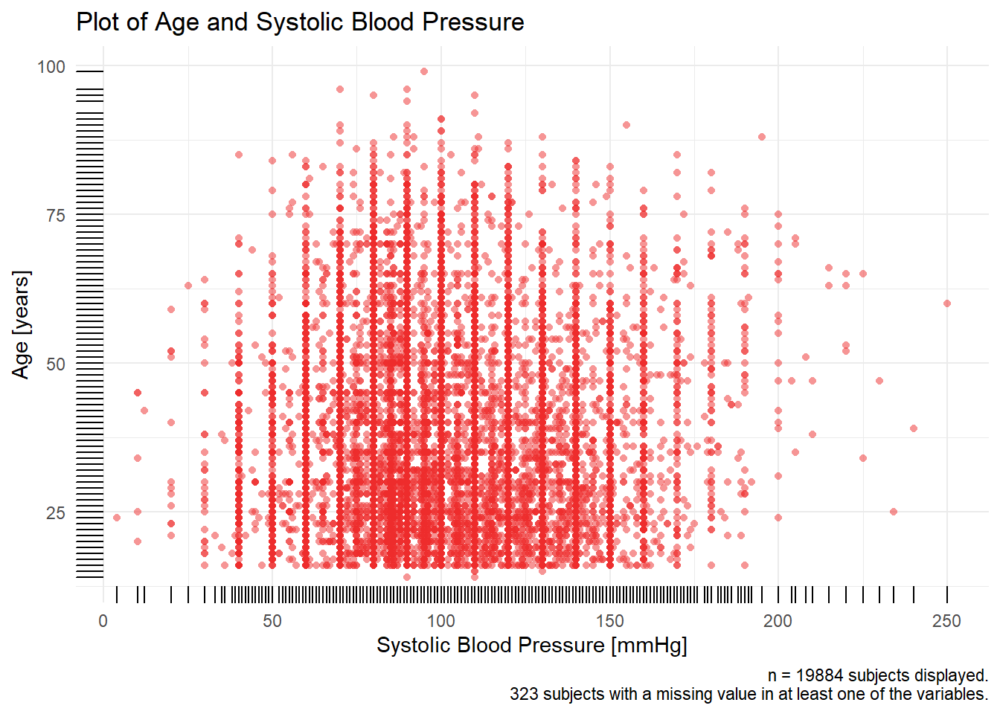
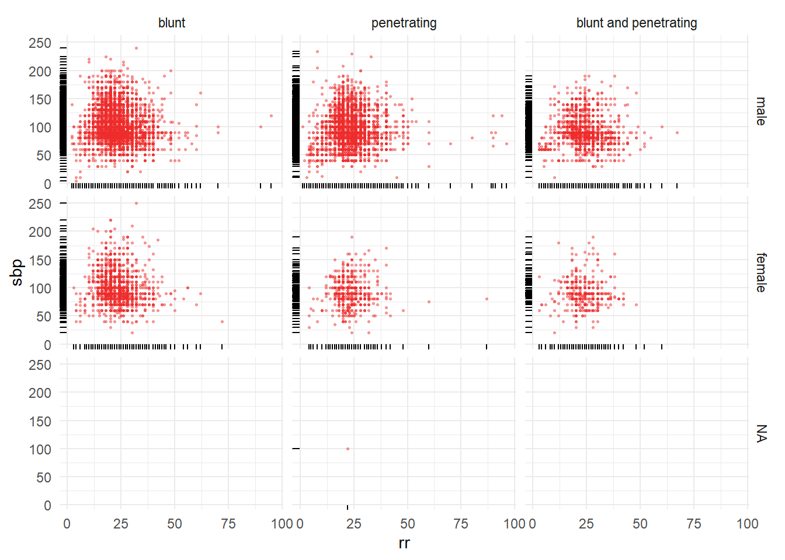

Chapter 8 Bivariate distributions
Multivariate a_crash2
This code is a continous by example
8.1 Read data
8.1.1 Load the dataset.
load(here::here("data", "a_crash2.rda"))
## TODO: Move out to data prep
## TODO: Complete metadata by adding missing labels.
## This should be a dervived dataset stored in data as we are adding to the oirginal source dataset obtained.
a_crash2 <- Hmisc::upData(a_crash2,
labels = c(age = 'Age'),
units = c(age = "years", injurytime = "hours", gcs = "points"))## Input object size: 1385720 bytes; 14 variables 20207 observations
## New object size: 1385720 bytes; 14 variables 20207 observations8.1.2 Summary
library(arsenal)
crs.char <-
tableby(
sex ~ age + hr + rr + sbp ,
data = a_crash2,
test = FALSE,
numeric.stats = c("median", "q1q3", "range"),
digits = 1, digits.p = 2, digits.pct = 1
)
summary(crs.char, title = 'Patient characteristics') | male (N=16935) | female (N=3271) | Total (N=20206) | |
|---|---|---|---|
| Age | |||
| Median | 30.0 | 35.0 | 30.0 |
| Q1, Q3 | 23.0, 41.0 | 25.0, 50.0 | 24.0, 43.0 |
| Range | 1.0 - 99.0 | 15.0 - 96.0 | 1.0 - 99.0 |
| Heart Rate | |||
| Median | 105.0 | 106.0 | 105.0 |
| Q1, Q3 | 90.0, 120.0 | 92.0, 120.0 | 90.0, 120.0 |
| Range | 3.0 - 198.0 | 3.0 - 220.0 | 3.0 - 220.0 |
| Respiratory Rate | |||
| Median | 22.0 | 22.0 | 22.0 |
| Q1, Q3 | 20.0, 26.0 | 20.0, 26.0 | 20.0, 26.0 |
| Range | 1.0 - 96.0 | 3.0 - 87.0 | 1.0 - 96.0 |
| Systolic Blood Pressure | |||
| Median | 95.0 | 90.0 | 95.0 |
| Q1, Q3 | 80.0, 110.0 | 80.0, 110.0 | 80.0, 110.0 |
| Range | 4.0 - 240.0 | 20.0 - 250.0 | 4.0 - 250.0 |
## Warning: package 'gtsummary' was built under R version 3.6.3## 1 observations missing `sex` have been removed. To include these observations, use `forcats::fct_explicit_na()` on `sex` column before passing to `tbl_summary()`.| Characteristic | male, N = 169351 | female, N = 32711 |
|---|---|---|
| Age | 30 (23, 41) | 35 (25, 50) |
| Unknown | 3 | 1 |
| Heart Rate | 105 (90, 120) | 106 (92, 120) |
| Unknown | 95 | 42 |
| Respiratory Rate | 22 (20, 26) | 22 (20, 26) |
| Unknown | 143 | 48 |
| Systolic Blood Pressure | 95 (80, 110) | 90 (80, 110) |
| Unknown | 267 | 53 |
|
1
Statistics presented: median (IQR)
|
||
8.1.3 Histograms
8.2 Age
8.2.1 Continous
## n
## 1 19887## n
## 1 320bigN <- a_crash2 %>% dplyr::filter(!is.na(sbp) & !is.na(age)) %>% tally()
n_miss <- a_crash2 %>% dplyr::filter(is.na(sbp) | is.na(age)) %>% tally()
title <-
paste0("Plot of ", Hmisc::label(a_crash2$age), " and ", Hmisc::label(a_crash2$sbp))
caption <-
paste0(
"n = ",
bigN,
" subjects displayed.\n",
n_miss,
" subjects with a missing value in at least one of the variables."
)
x_axis <- paste0(Hmisc::label(a_crash2$age), " [", Hmisc::units(a_crash2$age), "]")
y_axis <- paste0(Hmisc::label(a_crash2$sbp), " [", Hmisc::units(a_crash2$sbp), "]")
p1 <- a_crash2 %>%
dplyr::filter(!is.na(sbp) & !is.na(age)) %>%
mutate(sbp = as.numeric(sbp),
age = as.numeric(age)) %>%
ggplot(aes(x = sbp, y = age)) +
ylab(x_axis) +
xlab(y_axis) +
labs(
title = title,
caption = caption
) +
geom_point(shape = 16, #size = 0.5,
alpha = 0.5,
color = "firebrick2") +
geom_rug() +
theme_minimal()
p1
8.2.2 Continous
p1 <- a_crash2 %>%
filter(!is.na(sbp) & !is.na(age)) %>%
mutate(sbp = as.numeric(sbp),
age = as.numeric(age)) %>%
ggplot(aes(x = sbp, y = age)) +
geom_point(shape = 16, size = 0.5,
alpha = 0.5,
color = "firebrick2") +
geom_rug() +
theme_minimal()
p2 <- a_crash2 %>%
filter(!is.na(sbp) & !is.na(hr)) %>%
mutate(sbp = as.numeric(sbp),
age = as.numeric(hr)) %>%
ggplot(aes(x = sbp, y = hr)) +
geom_point(shape = 16, size = 0.5,
alpha = 0.5,
color = "firebrick2") +
geom_rug() +
theme_minimal()
p3 <- a_crash2 %>%
filter(!is.na(sbp) & !is.na(rr)) %>%
mutate(sbp = as.numeric(sbp),
age = as.numeric(rr)) %>%
ggplot(aes(x = sbp, y = rr)) +
geom_point(shape = 16, size = 0.5,
alpha = 0.5,
color = "firebrick2") +
geom_rug() +
theme_minimal()
p4 <- a_crash2 %>%
filter(!is.na(hr) & !is.na(age)) %>%
mutate(sbp = as.numeric(hr),
age = as.numeric(age)) %>%
ggplot(aes(x = hr, y = age)) +
geom_point(shape = 16, size = 0.5,
alpha = 0.5,
color = "firebrick2") +
geom_rug() +
theme_minimal()8.2.3 Continous3
## Warning: package 'patchwork' was built under R version 3.6.3## Don't know how to automatically pick scale for object of type labelled/integer. Defaulting to continuous.
## Don't know how to automatically pick scale for object of type labelled/integer. Defaulting to continuous.
## Don't know how to automatically pick scale for object of type labelled/integer. Defaulting to continuous.
8.3 Scatter plots with a third or fourth variable
Scatter plot of age and RR by sex and injury type.
ggplot(a_crash2, aes(
y = age,
x = rr
)) +
geom_point(shape = 16, size = 0.5,
alpha = 0.5,
color = "firebrick2") +
geom_rug() +
facet_grid(sex ~ injurytype) +
theme_minimal()## Don't know how to automatically pick scale for object of type labelled/integer. Defaulting to continuous.
## Don't know how to automatically pick scale for object of type labelled/integer. Defaulting to continuous.## Warning: Removed 195 rows containing missing values (geom_point).
Scatter plot of SBP and RR by sex and injury type.
ggplot(a_crash2, aes(
y = sbp,
x = rr
)) +
geom_point(shape = 16, size = 0.5,
alpha = 0.5,
color = "firebrick2") +
geom_rug() +
facet_grid(sex ~ injurytype) +
theme_minimal()## Don't know how to automatically pick scale for object of type labelled/integer. Defaulting to continuous.
## Don't know how to automatically pick scale for object of type labelled/integer. Defaulting to continuous.## Warning: Removed 457 rows containing missing values (geom_point).
8.4 Session info
## R version 3.6.1 (2019-07-05)
## Platform: x86_64-w64-mingw32/x64 (64-bit)
## Running under: Windows 10 x64 (build 17763)
##
## Matrix products: default
##
## locale:
## [1] LC_COLLATE=English_United States.1252
## [2] LC_CTYPE=English_United States.1252
## [3] LC_MONETARY=English_United States.1252
## [4] LC_NUMERIC=C
## [5] LC_TIME=English_United States.1252
##
## attached base packages:
## [1] stats graphics grDevices utils datasets methods base
##
## other attached packages:
## [1] patchwork_1.0.0 gtsummary_1.2.6 arsenal_3.4.0 Hmisc_4.4-0
## [5] Formula_1.2-3 survival_3.2-3 lattice_0.20-40 summarytools_0.9.6
## [9] janitor_2.0.1 forcats_0.5.0 stringr_1.4.0 dplyr_0.8.5
## [13] purrr_0.3.4 readr_1.3.1 tidyr_1.0.2 tibble_3.0.1
## [17] ggplot2_3.3.0 tidyverse_1.3.0 here_0.1
##
## loaded via a namespace (and not attached):
## [1] nlme_3.1-145 matrixStats_0.56.0 fs_1.3.2
## [4] lubridate_1.7.4 RColorBrewer_1.1-2 httr_1.4.1
## [7] rprojroot_1.3-2 tools_3.6.1 backports_1.1.7
## [10] R6_2.4.1 rpart_4.1-15 lazyeval_0.2.2
## [13] DBI_1.1.0 colorspace_1.4-1 nnet_7.3-13
## [16] withr_2.2.0 tidyselect_1.1.0 gridExtra_2.3
## [19] compiler_3.6.1 cli_2.0.2 rvest_0.3.5
## [22] gt_0.2.0.5 htmlTable_1.13.3 xml2_1.2.5
## [25] plotly_4.9.2.1 labeling_0.3 sass_0.2.0
## [28] bookdown_0.18 scales_1.1.1 checkmate_2.0.0
## [31] commonmark_1.7 digest_0.6.25 foreign_0.8-76
## [34] rmarkdown_2.1 base64enc_0.1-3 jpeg_0.1-8.1
## [37] pkgconfig_2.0.3 htmltools_0.4.0 highr_0.8
## [40] dbplyr_1.4.2 htmlwidgets_1.5.1 rlang_0.4.6
## [43] readxl_1.3.1 rstudioapi_0.11 pryr_0.1.4
## [46] farver_2.0.3 generics_0.0.2 jsonlite_1.6.1
## [49] crosstalk_1.1.0.1 acepack_1.4.1 magrittr_1.5
## [52] rapportools_1.0 Matrix_1.2-18 Rcpp_1.0.4.6
## [55] munsell_0.5.0 fansi_0.4.1 lifecycle_0.2.0
## [58] stringi_1.4.6 yaml_2.2.1 snakecase_0.11.0
## [61] plyr_1.8.6 grid_3.6.1 crayon_1.3.4
## [64] haven_2.2.0 splines_3.6.1 pander_0.6.3
## [67] hms_0.5.3 magick_2.3 knitr_1.28
## [70] pillar_1.4.4 tcltk_3.6.1 codetools_0.2-16
## [73] reprex_0.3.0 glue_1.4.1 evaluate_0.14
## [76] latticeExtra_0.6-29 data.table_1.12.8 modelr_0.1.6
## [79] png_0.1-7 vctrs_0.3.0 cellranger_1.1.0
## [82] gtable_0.3.0 assertthat_0.2.1 xfun_0.12
## [85] broom_0.5.5 viridisLite_0.3.0 cluster_2.1.0
## [88] ellipsis_0.3.0